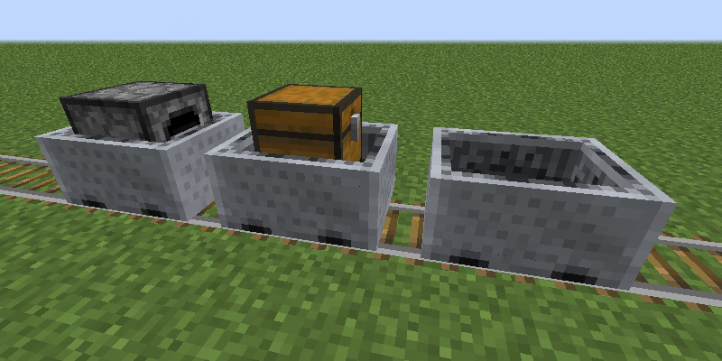

Now Minecarts are much more fast, finally they are a proper way of transport in Minecraft! (you can change the speed with the /gamerule max_minecart_speed)
Also! they have new physics! thanks mojang for adding that experiment it's awesome!